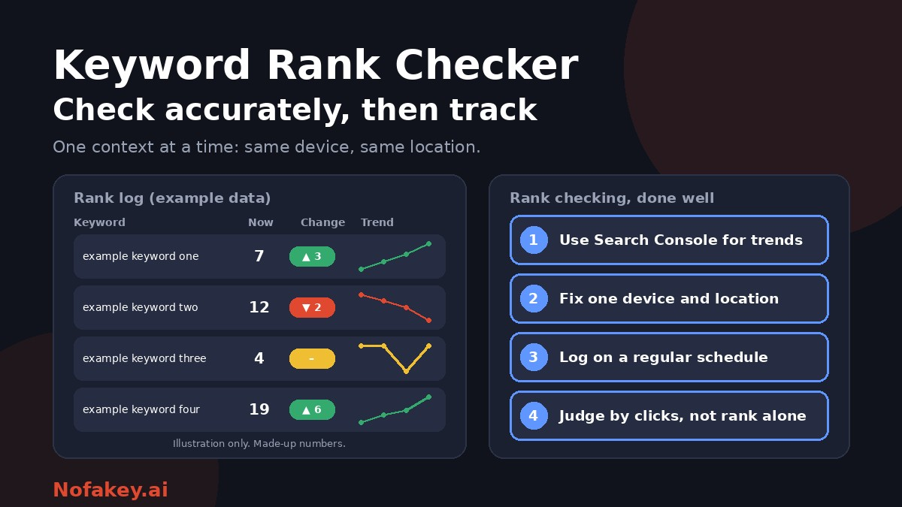

"Where do I rank for this keyword?" sounds like a simple question with a single answer. It is not. The position you see depends on where you are, what device you use and what you searched before, and the numbers from different tools rarely match. This guide explains why, shows how to check rankings accurately, and includes a free rank log you can use right on this page to keep track of changes over time.
Why your rank depends on who is asking
- Location. The same search can show different results in different countries, cities and even neighbourhoods, especially for local intent.
- Device. Mobile and desktop results differ.
- Personalisation. Language settings, search history and signed-in status can change what you see. A private window helps but does not remove all of this.
- Search features. Maps, videos, answer boxes and ads push organic results down, so "position 3" can look very different on the screen.
- Constant change. Results move day to day, and sometimes within a day.
So when two tools report different positions, that is normal. They are measuring different contexts.
Three ways to check, and what each really tells you
| Method | What it gives you | Main limits |
|---|---|---|
| Google Search Console (free, your own site only) | Real data from Google: clicks, impressions, click-through rate and average position by query and page | It is an average across locations, devices and query variations, not a live rank. Data arrives with a delay of a couple of days, and you only see queries that already brought impressions |
| A rank tracker (free or paid) | A snapshot for a keyword in a chosen location and device, often on a schedule, with history and competitors | One context only, results can vary between tools, and paid plans limit keywords and checks |
| A manual check | A rough idea of what a searcher in your situation might see | Personalised and location-dependent, so unreliable for precise tracking |
A useful way to think about it: Search Console tells you what really happened across your audience, a rank tracker tells you what one searcher in one place would see, and a manual check is a quick sanity test.
Using Search Console for rank data
- Open the Search results performance report for your site in Search Console.
- Turn on the average position metric, and open the Queries tab to see positions by keyword.
- Filter by page, country and device when a number looks odd. A position that looks middling overall may be strong in one country and weak in another.
- Compare date ranges, for example the last four weeks against the four before, rather than looking at single days.
- Look at clicks and impressions with the position. A position that rises while clicks fall tells a different story from one where both improve.
- Export the data if you want to keep a longer history, since Search Console currently keeps about 16 months.
Remember that average position is a blend. A page that appears at position 2 for some searches and 20 for others may show an average that matches neither.
A simple routine for accurate rank checks
- Choose a short list of keywords that matter, with the page you want to rank for each. Tracking everything just adds noise.
- Fix the context. Pick the country or city, the device and the language you care about, and use them every time.
- Check on a schedule, such as weekly, at a similar time.
- Record the position, the date and the context. You can use the rank log below, a spreadsheet or a tracker.
- Note changes in the page or the search results, such as an update to your content or a new feature on the results page.
- Review trends monthly, and act on sustained movement, not daily wobble.
- Cross-check with Search Console and analytics to see whether rankings are bringing visitors.
Free rank log (manual tracker)
What it does: you enter positions you found elsewhere, such as a rank tracker, a careful manual check or a Search Console query, and the log stores them in your browser, shows the latest position, the change since the previous check and a small trend line, and lets you export a CSV. What it does not do: it does not look up live Google rankings, and nothing you enter is sent to any server. If you clear your browser data, the log is cleared too, so export a copy if you want to keep it.
How to read your results
- Lower numbers are better. Position 1 is the top organic result. An up arrow means the number fell, which is an improvement.
- Ignore small wobbles. Moves of a place or two from week to week are usually normal.
- Look for direction over several checks, not a single change.
- Pair with real traffic. Rankings only matter if they bring clicks that help your goals.
Common mistakes
- Checking while signed in, on one device, in one city, then treating the result as universal.
- Comparing numbers from different tools as if they measured the same thing.
- Reacting to daily movement. Results fluctuate.
- Tracking too many keywords, including ones that do not map to a page or a goal.
- Ignoring intent. A ranking for a keyword that does not match what you offer will not help.
- Chasing rank instead of value. Clicks, leads and sales are the point.
- Scraping Google yourself. Automated queries can break the search engine's terms and get blocked, so use Search Console or a reputable service instead.
What to do when rankings change
- Check whether the change is sustained, and whether it is limited to one device or country.
- Review the page. Is it still accurate, useful and clearly better than the pages above it?
- Look at the results page. New features or new competitors can change the picture.
- Avoid knee-jerk rewrites. Change one thing at a time and note it in your log.
- Focus on helpfulness and originality. See does Google penalize AI-generated content?
Related reading for SEO and content teams
Rankings are one measure of content quality, not the only one. Before publishing, use a quality checklist, as described in AI text detectors for SEO content. For auditing a whole site, see AI content audit for SEO agencies. If a traffic drop worries you, see is my content flagged as AI-generated? For agencies managing many clients, see bulk AI content checker for agencies. Be careful with unsolicited emails or messages offering "guaranteed rankings," as many are scams. If one looks suspicious, paste it into our free checker for a quick first read.
Conclusion
A keyword rank checker gives you a number, but not a single truth. Use Search Console for real averages on your own site, a tracker or a careful manual check for a snapshot in one context, keep the context fixed, and focus on trends and on clicks. Log your checks, review them regularly and act on sustained changes. Find more guides on the Nofakey.ai blog.
Frequently asked questions
What is the most accurate way to check my keyword rankings?
There is no single exact rank, because results vary by location, device, language and personalisation. For your own site, Google Search Console gives real data as an average position. A rank tracker gives a snapshot for one chosen location and device. Use both, and compare like with like.
Why does Search Console show a different position from my rank tracker?
Search Console averages position across all locations, devices and query variations where your page appeared, while a rank tracker reports one specific context. They measure different things, so both can be correct.
Can I just search Google myself to check my rank?
You can, but results are personalised by location, language, device and history, and a private window does not fully remove this. Treat a manual check as a rough spot-check.
How often should I check keyword rankings?
Rankings move daily, so look at trends over weeks rather than reacting to single days. A weekly log is enough for most sites.
Does this page check my live Google rankings?
No. The rank log on this page is a manual tracker. You enter positions you found elsewhere, and it stores them in your browser, shows changes and exports a CSV. It does not query Google.
Got a suspicious link or message to check?
Run it through the checker